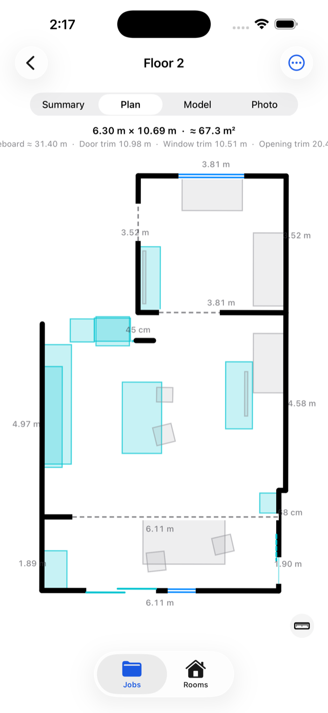

Besoin d'aide ? Écrivez à alexandre.blais@gmail.com — nous répondons rapidement.

La numérisation exige un iPhone muni d'un capteur LiDAR : iPhone 12 Pro / Pro Max et les modèles Pro suivants. Sur les autres appareils, l'application affiche un avis de compatibilité et vous pouvez tout de même consulter des numérisations existantes.
Chaque numérisation donne un plan coté, un modèle 3D et, si vous le souhaitez, un modèle photoréaliste. Vous pouvez mesurer en touchant deux points, annoter des photos, consigner des relevés d'humidité et produire un rapport. Le Studio de plans permet d'ouvrir un plan dans un navigateur, de le zoomer, de voir la cote de chaque mur et la position de chaque porte et fenêtre, et d'ajouter douches, baignoires, vanités et autres objets. Les exportations comprennent le PDF, le CSV, le DXF, le SVG, le FML, le STL et l'OBJ.
Les dimensions, superficies et quantités produites par MR 3D Floor sont des estimations issues d'un relevé LiDAR. Elles servent à planifier des travaux, à documenter un état et à préparer des soumissions.
Elles ne constituent pas un certificat de localisation, un relevé d'arpenteur-géomètre, un calcul de superficie habitable au sens des normes immobilières, ni une attestation de conformité au code du bâtiment. Vérifiez toute mesure critique avant de couper, de commander du matériel ou de signer un document contractuel.
La numérisation, les plans, l'affichage et la mesure sont gratuits. MR 3D Floor Pro débloque les rapports PDF et les exportations de fichiers ; le prix et la durée sont affichés dans l'application avant tout achat. Gérez ou annulez dans Réglages > compte Apple > Abonnements. Les remboursements relèvent d'Apple, à reportaproblem.apple.com.
Tout est traité sur votre appareil et l'application ne contient aucun code réseau — voir la politique de confidentialité.
Need help? Email alexandre.blais@gmail.com — we answer fast.
Scanning requires a LiDAR-equipped iPhone: iPhone 12 Pro / Pro Max and later Pro models. On other devices the app shows a compatibility notice, and you can still open existing scans.
Every scan gives you a dimensioned plan, a 3D model and, if you want it, a photo-real model. You can measure by tapping two points, annotate photos, log moisture readings and produce a report. The Plan Studio opens a plan in a browser so you can zoom it, read every wall length and every door and window position, and add showers, tubs, vanities and other objects. Exports include PDF, CSV, DXF, SVG, FML, STL and OBJ.
The dimensions, areas and quantities MR 3D Floor produces are estimates derived from a LiDAR capture. They are meant for planning work, documenting a condition and preparing quotes.
They are not a certificate of location, a land surveyor's report, a habitable-area calculation under real-estate standards, or a statement of building-code compliance. Verify any critical measurement before cutting, ordering material or signing a contractual document.
Scanning, plans, viewing and measuring are free. MR 3D Floor Pro unlocks PDF reports and file exports; the price and term are shown in the app before any purchase. Manage or cancel in Settings > Apple Account > Subscriptions. Refunds are handled by Apple at reportaproblem.apple.com.
Everything is processed on your device and the app contains no networking code — see the Privacy Policy.